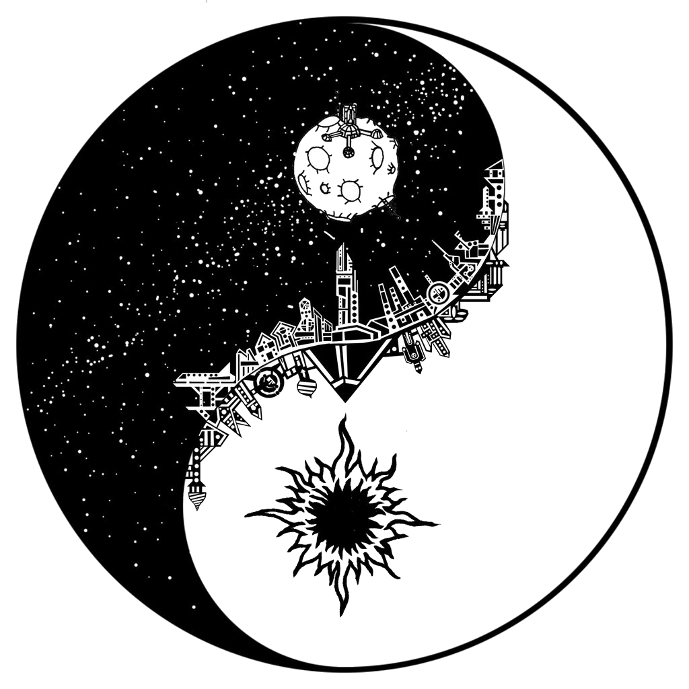
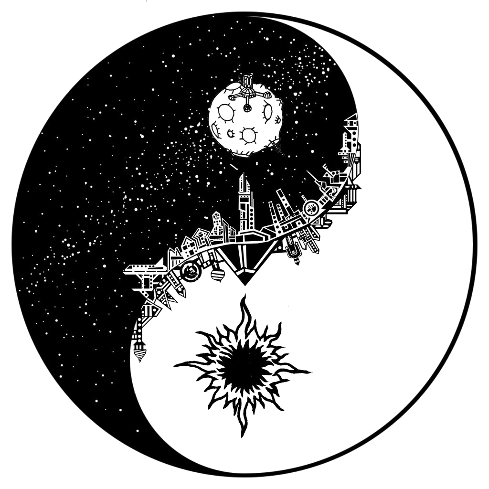
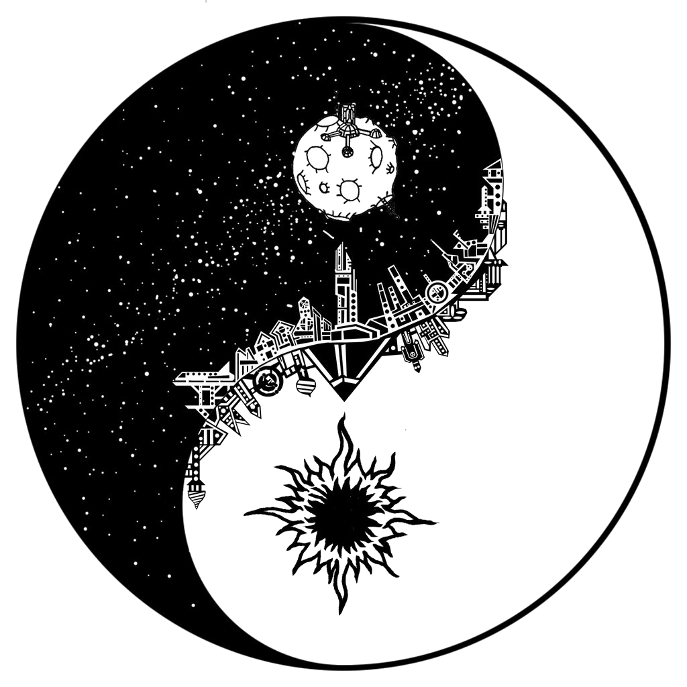

INICIO
DOWNLOAD BOOKS
ABOUT
REDES SOCIALES
Aprender Japones Ahora Es Mas Facil
Descarga nuestros libro disponibles para aprender de una manera facil y didactica.
Download Books
Japanese Test
NO PIERDAS MAS TIEMPO
Les traigo estos libros tan dificiles de conseguir por internet ! Esenciales para Autodidactas que quieren aprender Japones !
JLPT N5
Libros del Primer Nivel
Download Books
JLPT N4
Libros del Seguno Nivel
Download Books
JLPT N3
Libros del Tercer Nivel
Download Books
 
